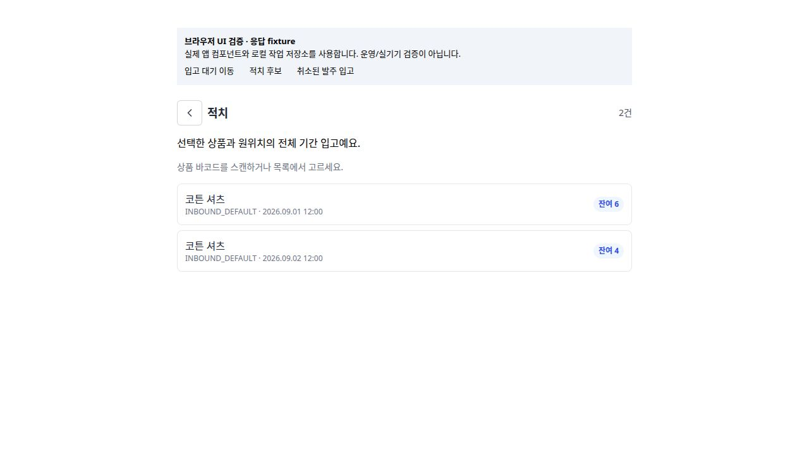
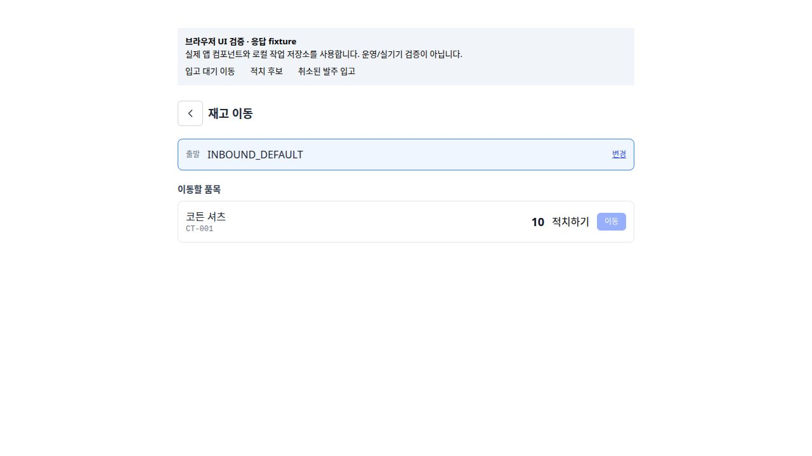
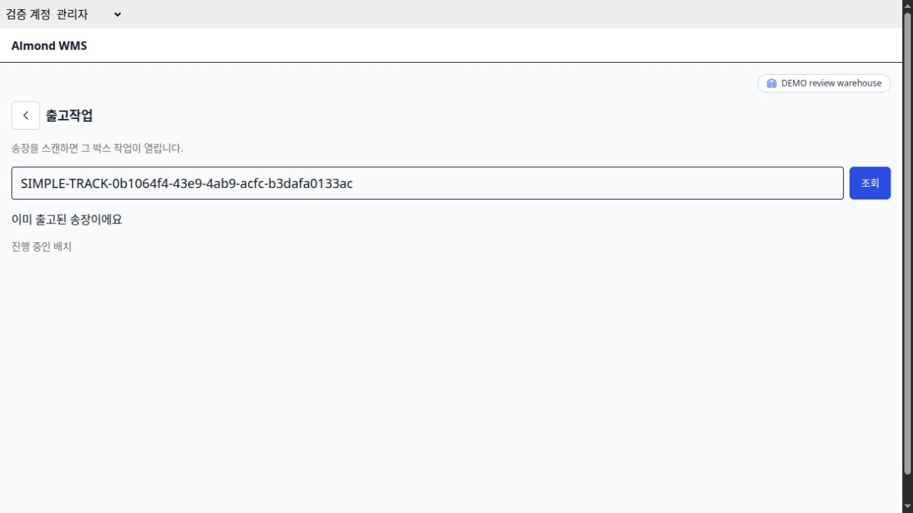

ROLE GUIDE · WAREHOUSE
스캔할 때마다
위치와 수량을 확인합니다
Windows PC에서 입고 4+6, 적치, 이동, 송장 기반 통합 출고까지 한 흐름으로 처리합니다.
DEVICE PRE-FLIGHT
Windows 작업대는 90초 안에 점검합니다
로그인·창고
- 앱에서 Login을 누릅니다.
- 브라우저 로그인이 끝나면 Almond WMS로 돌아왔는지 확인합니다.
- 오른쪽 위 창고가 데모 국내 물류센터인지 확인합니다.
- 홈에 재고조회 · 출고작업 · 입고 · 입고내역 · 적치 · 이동이 보이는지 확인합니다.
스캐너·프린터
- 메모장에 시험 바코드를 스캔해 문자열이 한 번 들어오는지 확인합니다.
- 스캐너가 마지막에 Enter를 한 번 전송하는지 확인합니다.
- 프린터의 Windows 기본 장치·라벨 방향·용지를 확인합니다.
- 시험 라벨을 다시 스캔해 원문과 같은지 확인합니다.
Windows 설치 파일은 빌드와 SHA-256 대사를 마쳤습니다. 지정 PC 설치·실행, OAuth callback, 스캐너·프린터 모델과 라벨 규격은 실물 인수표에서 완료해야 합니다.
STEP 1 · LOOK BEFORE TOUCHING
재고조회에서 대상과 위치를 먼저 맞춥니다
홈›재고조회›상품 바코드 스캔 또는 검색›상품 재고 상세
1
상품
상품명과 SKU 코드가 인계 카드와 같은지 확인합니다.
2
위치
DEMO-RECEIVING은 입고대기, DEMO-A-01-01은 일반 보관 위치입니다.
3
수량
작업 전 위치별 수량을 기록합니다. 여러 교육생이 쓰면 총량만으로 판정하지 않습니다.
검색 0건이면 바코드를 반복 스캔하지 않습니다. 안내자에게 SKU 코드, 읽힌 바코드 문자열, 선택 창고를 전달합니다.
STEP 2 · RECEIVE 4
첫 입고는 4개만 확정합니다
- 홈›입고에서 공급처와 남은 10인 발주를 선택합니다.
- 발주 품목에서 상품명·SKU, “발주 10 · 입고 0 · 남은 10”을 확인하고 입고를 누릅니다.
- 입고 수량 직접 입력에 4를 입력하고 Enter 또는 입력칸 밖을 눌러 입력을 끝냅니다.
- 표시 수량이 4인지 다시 보고 아래 입고를 누릅니다.
- “교육 상품 4개 입고됨”과 적치하기를 확인합니다.
발주 품목
교육 상품
DEMO-SKU-001
발주 10 · 입고 0 · 남은 10
입고
입고 수량
4
남은 수량을 넘으면 버튼이 비활성화됩니다.
목록에서 품목을 눌러 열면 남은 10이 제안될 수 있습니다. 이번 실습은 반드시 4로 바꿔서 첫 부분 입고를 만듭니다.
SCANNING RULE
바코드 1회가 항상 1개라는 보장은 없습니다
낱개 바코드
포장단위 값이 없으면 +1
현재 소스는 바코드 행의 packingUnit이 없거나 이상하면 안전하게 1개만 더합니다.
박스 바코드
등록된 packingUnit만큼 증가
예: 20개입 바코드가 20으로 등록됐다면 스캔 1회가 +20입니다. SKU가 아니라 바코드별 값입니다.
| 스캔 전 | 스캔 | 화면에서 확인 | 틀렸을 때 |
|---|---|---|---|
| 입력칸 포커스 해제 | 낱개 또는 박스 바코드 1회 | 표시 수량이 실제 수령량과 같음 | 숫자패드/직접 입력으로 바로 수정 |
| 상품명·SKU 확인 | 다른 상품 바코드 금지 | 현재 품목 수량 유지 여부 | 오류 창에서 제외/다시 확인 후 계속 |
박스 포장단위는 실물 인수 전까지 단정하지 않습니다. 교육 당일 지정된 바코드 카드와 입수표를 보고 수량을 눈으로 대사합니다.
STEP 3 · PUTAWAY
입고 직후 4개를 보관 위치로 옮깁니다
- 입고 성공 카드의 적치하기를 누르거나 홈의 적치에서 대상 입고를 고릅니다.
- 적치 수량 4를 확인합니다. 전량이면 전량을 눌러도 됩니다.
- 대상 로케이션 검색에서 DEMO-A-01-01을 스캔하거나 입력합니다.
- 대상지가 출발지 DEMO-RECEIVING이 아닌지 확인합니다.
- 적치를 누르고 입고대기 잔여가 0인지 확인합니다.
나중에를 누르면 입고는 취소되지 않습니다. 홈의 적치 대기 목록에 남습니다.

STEP 4 · RECEIVE 6
같은 발주에서 남은 6개를 마칩니다
발주 다시 열기발주 10 · 입고 4 · 남은 6
입고 수량 6직접 입력 또는 검증된 스캔 누계
입고 확정“6개 입고됨” 확인
적치 6DEMO-A-01-01
입고대기 0
입고대기 0
정상 결과
- 발주 목록에서 대상이 사라지거나 남은 품목 없음
- 발주 누계 10 / 남은 0
- 입고내역에 4와 6 두 건
- 두 입고 모두 적치 완료
리테일팀에 인계
- 발주번호
- 1차 4 · 2차 6
- 입고대기 0
- 대상 위치와 완료 시각
첫 4개가 아직 입고대기에 있으면 2차 입고 전에 적치부터 끝냅니다. 입고대기 재고를 일반 이동으로 소비하지 않습니다.
OPTIONAL DEEPENING
이동은 적치가 끝난 자유 재고에만 사용합니다
- 홈의 이동을 눌러 재고 이동 화면을 엽니다.
- 출발 위치를 스캔·선택합니다.
- 상품을 선택하고 이동 수량을 확인합니다.
- 목적지 위치를 선택한 뒤 이동을 확정합니다.
입고대기 재고면 적치하기 경로가 표시되고 일반 이동이 막힐 수 있습니다. 예약·가용 부족도 이동 제한 사유입니다.

STEP 5 · OPEN INTEGRATED OUTBOUND
피킹과 패킹은 출고작업에서 이어집니다
홈›출고작업›운송장번호 스캔›조회›출고 준비
- 인계 카드의 창고와 앱 오른쪽 위 창고가 같은지 확인합니다.
- 송장을 스캔합니다. 수동이면 운송장번호에 입력하고 조회를 누릅니다.
- 배송사·송장·마스킹된 수취인과 품목 수량을 확인합니다.
- 작업이 시작 전이면 출고 준비를 누릅니다.
- 시스템이 표시한 위치별 할당과 남은 수량을 읽습니다.
즉시 멈춰야 하는 문구
- 송장의 창고와 선택 창고가 달라요
- 이미 출고된 송장이에요
- 이 송장은 오늘 배치에 없어요
- 위치를 확인하는 출고를 사용하려면 서버 연결과 업데이트를 확인
문구를 우회하려고 새 송장을 만들거나 다른 창고를 임의 선택하지 않습니다.
STEP 6 · LOCATION THEN PRODUCT
위치 → 상품 순서로 스캔합니다
출발 위치 선택출발 위치 코드 스캔 또는 표시된 위치 버튼
수량 설정다음 스캔 수량
기본 1
기본 1
상품 스캔출고 상품 바코드
할당 SKU 확인
할당 SKU 확인
다음 위치위치 변경
남은 수량 반복
남은 수량 반복
정상 진행
- 각 행의 피킹 수량이 늘고 남은 수량이 줄어듦
- 다른 위치가 남으면 위치 선택으로 돌아감
- 모든 스캔 뒤 화면이 출고완료로 전환
- 다음 송장 스캔으로 복귀
오스캔
- 이 송장에 없는 상품이면 수량이 늘지 않음
- 표시되지 않은 위치는 선택하지 않음
- 스캔 생략 확인은 관리자 권한과 실물 대사 필요
- 일반 작업자는 생략 경로로 우회하지 않음
RECOVERY
응답이 불확실하면 같은 작업을 “확인”합니다
| 화면 상황 | 정확한 조작 |
|---|---|
| 입고 상태 확인 필요 | 다시 확인 |
| 저장된 입고 요청 확인 | 같은 내용으로 재확인, 새 입고를 만들지 않음 |
| 적치 상태 확인 필요 | 다시 확인 후 현재 잔량 읽기 |
| 출고 처리 내역 확인 필요 | 처리 내역 확인 |
| 작업 데이터 갱신 필요 | 작업 새로고침 |
| 앱 재시작 후 | 이어서 작업으로 서버 상태 재조회 |

금지 · 처리 결과가 불확실한 상태에서 송장을 다시 발급하거나, 새 발주/입고/출고 작업을 만들어 우회하지 않습니다.
HANDOFF & TROUBLESHOOTING
완료 수량과 화면 문구를 함께 인계합니다
| 증상 | 현장 확인 | 인계할 값 |
|---|---|---|
| 발주가 입고 목록에 없음 | 창고, 발주 실행 여부, 남은 품목 | 발주번호 · 목적지 · 상태 |
| 입고 수량 초과 | “남은 n개”와 현재 입력 | 발주/입고/남은 수량 |
| 적치 대상 없음 | 입고내역, 이미 적치/취소 여부, 원위치 | 입고 라인 · 위치 · 시각 |
| 송장 조회 실패 | 번호 원문, 선택 창고, 오늘 배치 | 주문 · shipment · 송장 |
| 상품 오스캔 | 읽힌 바코드와 화면 대상 SKU | 위치 · SKU · 남은 수량 |
| 프린터 문제 | Windows 큐, 용지, 방향, 재스캔 값 | 모델 · 드라이버 · 라벨 규격 |
Acceptance 통과 · 2026-09-17 07:14 KST · PO 6f59ecb3…28ec8의 10개를 4+6으로 입고·적치해 남음 0. 정상/부족 주문은 송장 983197548424 / 946914947774로 모두 출고완료·모의 연동 성공.